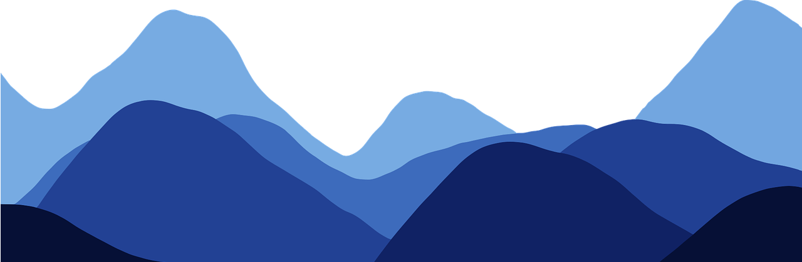
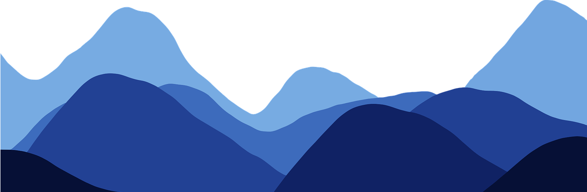
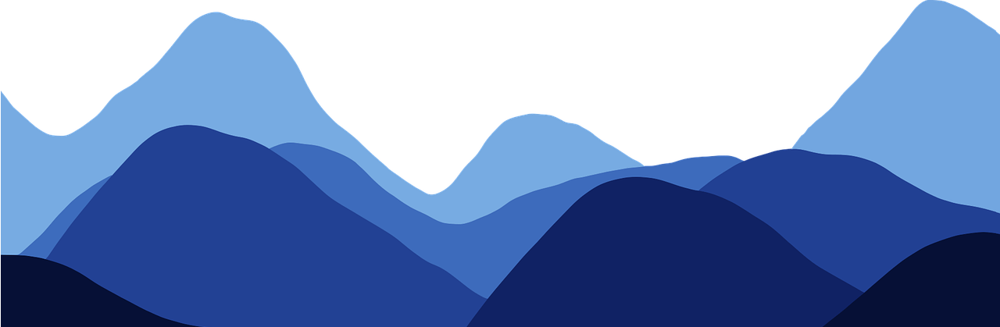
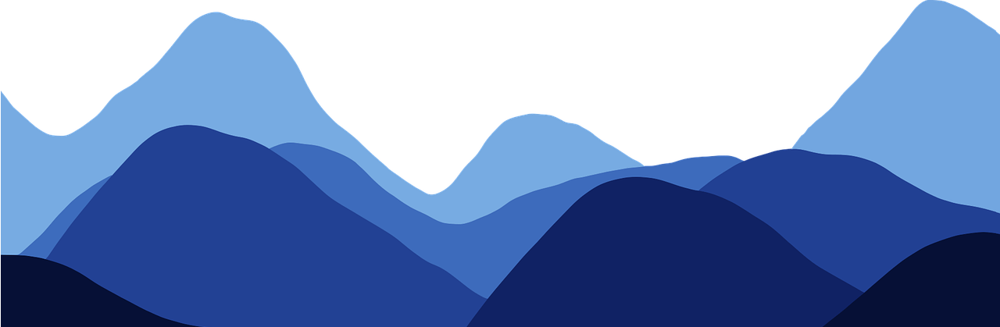

SNIPPET WIZARD
 

 

Life is full of challenges, and each obstacle we face presents an opportunity for growth. In times of difficulty, it may seem like the world is against us, but these moments are often the ones that shape us the most. Resilience, or the ability to bounce back from adversity, is a key factor in personal development.
The process of overcoming challenges teaches us valuable lessons about patience, perseverance, and self-awareness. While it may be difficult to see the benefits during tough times, every struggle is a stepping stone toward becoming a stronger, more capable individual.
In this journey of growth, it is important to remember that success is not defined by the absence of problems but by the ability to face and overcome them. Each setback is an opportunity to learn, adapt, and become more resilient. By embracing these challenges with a positive mindset, we can transform obstacles into opportunities for personal growth.
In conclusion, the road to personal growth is not always easy, but it is always rewarding. Through resilience and a willingness to learn from our experiences, we can navigate life’s challenges and emerge stronger, wiser, and more confident in our abilities.
Self-reflection is a crucial part of personal growth. Taking time to evaluate our actions, thoughts, and feelings helps us understand ourselves better and identify areas for improvement. Regular self-reflection allows us to learn from our mistakes and successes, guiding us toward better decision-making in the future.
True growth happens when we step outside our comfort zones. Trying new things, even when they seem daunting, pushes us to develop new skills and perspectives. Whether it's learning a new hobby, taking on a challenging project, or confronting a fear, stepping out of our comfort zone is often the first step toward meaningful change.
Failure is not the end; it is often the beginning of success. Every successful person has faced setbacks, but it is their ability to learn from failure that sets them apart. Failure teaches us resilience, problem-solving, and adaptability. Instead of fearing failure, we should embrace it as a valuable learning experience that brings us closer to our goals.
Life is full of challenges, and each obstacle we face presents an opportunity for growth. In times of difficulty, it may seem like the world is against us, but these moments are often the ones that shape us the most. Resilience, or the ability to bounce back from adversity, is a key factor in personal development.
In this journey of growth, it is important to remember that success is not defined by the absence of problems but by the ability to face and overcome them. Each setback is an opportunity to learn, adapt, and become more resilient. By embracing these challenges with a positive mindset, we can transform obstacles into opportunities for personal growth.